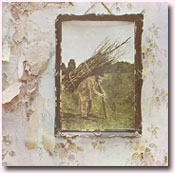
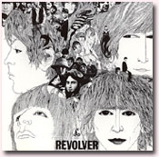

|

■音階の話
着メロ、懐メロ、思い出のメロディー。「メロディー」はそれぞれの曲の看板だ。リズムやハーモニーも大事だけれど、一番耳が吸い寄せられ、追いかけて、やがて記憶に残り、ふとしたときに口ずさむのは、やっぱりその曲のメロディーだ。メロディーは曲の「顔」といってもいいだろう。一人一人顔が違うように、メロディーも千差万別。似た顔の人が必ずいるように、似たメロディーもたくさんあって、少しでも似ていると「パクリ」だと言われてみたり（「パクリ」については、また別のときに書こうと思う）。
ところで、メロディーはどこから生まれてくるのだろう。「朝起きたとたん、天から降ってきた」と詩的な告白をするアーティストもいるが、それはそれで、もっと即物的に考えてみると、メロディーとはなんらかの「音階（スケール）」の音を抽出して並べたものに他ならない。20世紀初頭のヨーロッパに、あえて意識してそういう作業・操作によってシステマティックに曲を書いたシェーンベルクやベルクといった作曲家たちもいたが、たいていは音階など意識しないで、思いつくままメロディーを紡いでいるはずである。職業作曲家はともかく、世界各地の民謡などがそんなふうに「頭で作られた」とは考えにくい。それでも、ブルースはブルースの音階でできているし、沖縄の音楽は沖縄独特の音階でできている。それぞれの音楽文化圏で、それぞれ独特の音階が、自然にその地域の人たちにしみついているのだろう。
「音階」といえば、「ドレミファソラシド」だと思っている人が多いかもしれない。最近のベストセラー本の言い方を借りれば、＜世界中の音楽のうち、「ドレミファソラシド」という音階でできているのは、全体を100としたらほんのわずかな数でしかないが、それがすべての音楽の最高位にあるかのように、最も支配的な勢力となっている＞のである。学校で習う。ピアノ教室で習う。「ドはドーナツのド」と、九九のようにこの音階を覚えさせる「ドレミのうた」は、幼稚園児でも知っている。それでなんとなく、「ドレミファ〜」が音楽のすべてだと錯覚してしまうのだ。
だが実際は、世界中に数え切れないほど様々な音階がある。ちょっと整理してみよう。
●五音音階（ペンタトニック・スケール）
「ドレミファソラシド」は七音でできているが、たとえば「ドレミソラド」というように五音から成る音階すべてについていう。スコットランド、アイルランド、アンデス、アフリカ、中国など、世界の様々な地域の民謡の音階。アメリカの黒人霊歌やインドネシアのガムランの音階。日本の伝統音楽である雅楽の音階、民謡の音階、三味線や筝曲の音階、沖縄の音階。明治以降の唱歌や演歌、歌謡曲に多いヨナ抜き長音階と短音階。ロックやジャズで使われるブルース・ペンタトニック・スケールなど。
日本の民謡音階は「ラドレミソラ」が基本。「ソーラン節」や「あんたがたどこさ」などのあそびうた、わらべうたが主だが、70年代のヒット曲、キャンディーズの「春一番」やピンクレディーの「ペッパー警部」などもこの仲間なのだ。
沖縄の音階は「ドミファソシド」。これを使えば、即興で沖縄風のメロディーができあがる。ザ・ブームの「島唄」や「なめなさいさい〜♪」という飴のCMは、そうして作られた沖縄風メロディーである。
ヨナ抜き長音階は「ドレミソラド」。第4音（ファ）と7音（シ）が欠けているから「47抜き」。「蛍の光」「故郷の空」などのスコットランド民謡の音階と同じである。明治以後の唱歌にさかんに使われたが、現代の明るめ演歌にも多い。北島三郎の「函館の女」（というより「は〜るばる来たぜ さけ茶漬け〜♪」のCMでおなじみ）、氷川きよしの「箱根八里の半次郎」「大井追っかけ音次郎」などは、まさにコレ！＜やだねったら、やだね＞も＜やっぱりね、そうだろね＞も、この音階をなぞるだけのメロディーだし、なんといっても「さけ茶漬け」の出だしは、この音階を下から順に上がっていくという、最もわかりやすい例である。季節柄ついでに、童謡の「春よ来い」も、ユーミンの「春よ、来い」のサビもコレ。
ヨナ抜き短音階は「ドレ♭ミソ♭ラド」（＝ラシドミファラ）。 昔のサーカスや大道芸のBGMの定番「美しき天然」をはじめ、大正期の流行歌や昭和の演歌に多い。「影を慕いて」「悲しい酒」など、古賀政男作曲のいわゆる古賀メロディーが代表的。この音階にズンチャカチャッチャ ズンチャ ズンチャ というリズムを組み合わせれば、ド演歌の出来上がり！（なぜかラフマニノフのピアノ曲「前奏曲ト短調」の冒頭部分がこれなのだ……）童謡「月の沙漠」や「うれしいひなまつり」「東京音頭」もこの音階。
●六音音階
1オクターヴを全音ばかりで構成した全音音階「ドレミ#ファ#ソ♭シド」。ドビュッシーのピアノ曲「月の光」などで聴かれる、なんとも不思議な響き。
●七音音階
最も一般的な長音階「ドレミファソラシド」と短音階「ラシドレミファソラ」。（短音階は、そのままの自然的短音階、和音（コード）の響きを重視して、ソを半音上げて#ソにした和声的短音階、歌いやすく#ファ#ソにした旋律的短音階がある。）また、中世〜ルネサンス期のヨーロッパで主流だった教会旋法。かつてジプシーと呼ばれた、主に東ヨーロッパを流浪する民族ロマの音階（サラサーテのヴァイオリン曲「ツィゴイネルワイゼン」で聴かれる）等々。
教会旋法（チャーチ・モード） 男性僧たちの声が一本の柔らかな線となって朗々と響き渡る、グレゴリオ聖歌が本家本元。主音が何かによって、ドリア（レミファソラシドレ）、フリギア（ミ〜ミ）、リディア（ファ〜ファ）、ミクソリディア（ソ〜ソ）と呼ばれ、16世紀にはイオニア（ド〜ド）、エオリア（ラ〜ラ）が加わる。ジョスカン・デ・プレ、パレストリーナら15〜16世紀のルネサンスの合唱曲でその魅力を全開させるが、17世紀のバロック期になると、和音がつけやすい長・短音階にとって代わられる。イオニアが長音階、エオリアが短音階として地位を確立し、それ以外の旋法はリストラされたというわけ。ここからは学校の音楽室に居並ぶ肖像画の作曲家たちが活躍する。バッハ、ハイドン、モーツァルト……教会旋法はしばらく忘れられた存在となる。（だから学校では教会旋法なんて習わないでしょ？）肖像画のドン尻の方にきてようやく、長・短音階の世界にマンネリを感じ始めたドビュッシーらが様々な旋法（もはや教会旋法だけに限らない）の魅力を再発見する。19世紀後半のことだ。リストの「ハンガリー狂詩曲」やドヴォルザークの「スラヴ舞曲」のように各地の民謡の音階を取り入れるなど、作曲家たちは好んで旋法性のある音階を使うようになった。また、1950年代末に、モダン・ジャズの分野でも教会旋法が新天地を切り開くアイデアとして使われるようになり、マイルス・デイヴィス『カインド・オヴ・ブルー』、ジョン・コルトレーン『ジャイアント・ステップス』などが生まれた。こちらは「モード」という。同じ意味だけど。
ビートルズ「エリナー・リグビー」「ノルウェイの森」、サイモン＆ガーファンクル「スカボロー・フェア」（もとはイングランド民謡）、ドアーズ「ライト・マイ・ファイア」、レッド・ツェッペリン「天国への階段」などロック、ポップスのオールディーズから、「ファイナル・ファンタジー」シリーズや「ゼルダの伝説」など最近のゲーム音楽に至るまで、教会旋法や旋法性を持つ音階を使った曲は身近なところにたくさんある。
メロディーを生み出す土台としての音階。五音、六音、七音……と見てきたが、八音（あるいは九音）音階といっていいのかどうか、ブルー・ノートを含んだブルース・スケールも忘れてはならない。ブルー・ノートはドレミファソラシドのミ、ソ、シが半音下がった音。これを使えば、俗にいう哀愁を帯びたメロディーができあがる。
1930年代のロバート・ジョンソン、40年代のＴボーン・ウォーカーやマディ・ウォーターズ、50年代のB.B.キングなどの録音を聴くと、ブルース・スケールといって、ただの音階だけで片付けられない、もうちょっと何か滲み出たものが一つ一つの音にこびりついているような気がしてくる。
●最後に十二音音階
1オクターヴを12の半音に分割した、12音から成る音階。要するに半音階（クロマティック・スケール）だ。この音階を使って、主音という機能を与えず、12音みな同等の単なる音として扱ったのが、20世紀初頭のシェーンベルクらである。ブルース聴いたあとで聴くもんじゃない……かな。
メロディーを作る素材としての音階はこんなふうにいろいろあって、だからこそ、世界中に様々なメロディーを持つ音楽が生まれるのである。音階や旋法にまつわるおもしろい話は、まだまだたくさんある。このつづきは次回のおたのしみに……。

|